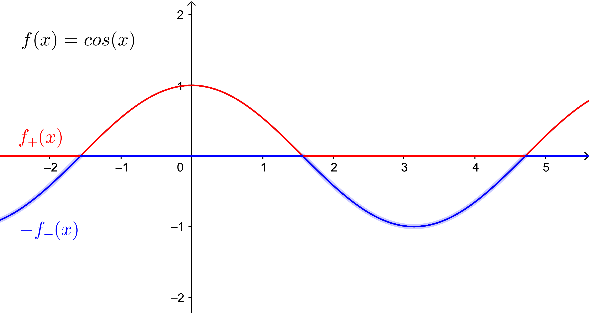
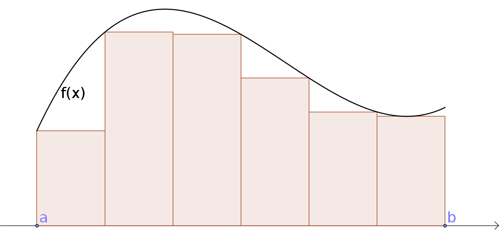
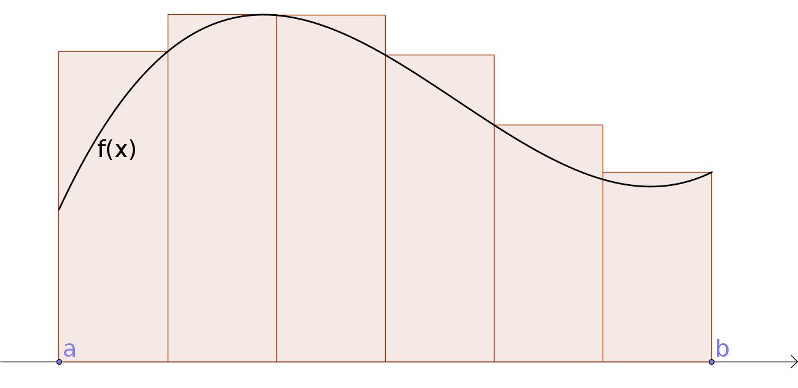

6. Heildun
Athugasemd
Nauðsynleg undirstaða
Markgildi. Sjá einnig undirstöðuatriði um markgildi.
Afleiður. Sjá einnig undirstöðuatriði um afleiður.
Reiknireglur fyrir afleiður, sér í lagi keðjureglan.
It can be very dangerous to see things from somebody else’s point of view without the proper training.
- Douglas Adams, The Ultimate Hitchhiker’s Guide : Five Complete Novels and One Story
6.1. Heildun
6.1.1. Óformleg skilgreining á heildi jákvæðs falls
Látum \(f:[a,b]\rightarrow {{\mathbb R}}\) vera fall þannig að \(f(x)\geq 0\) fyrir öll \(x\in[a,b]\).
Þegar
heildið
Ef heildið \(\int_a^b f(x)\,dx\) er skilgreint þá segjum við að
fallið \(f\) sé
heildanlegt
en: integrable
Smelltu fyrir ítarlegri þýðingu.
Tölurnar \(a\) og \(b\) kallast
heildismörk
en: limit of integration
Smelltu fyrir ítarlegri þýðingu.
6.1.2. Skilgreining
Skilgreining
Látum \(f\) vera fall. Skilgreinum föllin \(f_+\) og \(f_-\), sem bæði hafa sama skilgreiningarsvæði og \(f\), með
Athugið að \(f(x)=f_+(x)-f_-(x)\).
{kind=link}

6.1.3. Óformleg skilgreining á heildi falls
Takmarkað fall \(f\) er heildanlegt yfir bilið \([a, b]\) ef bæði föllin \(f_+\) og \(f_-\) eru heildanleg yfir bilið \([a, b]\). Ef fallið \(f\) er heildanlegt þá skilgreinum við heildi þess með formúlunni
Athugasemd
Flatarmálið sem er undir \(x\)-ás reiknast neikvætt.
6.2. Undir- og yfirsummur
6.2.1. Að finna heildi
Hvernig getum við fundið flatarmálið \(\int_a^b f(x)\, dx\)?
Svar: Við þurfum að nálga flatarmálið með formum sem hafa þekkt flatarmál, til dæmis rétthyrningum.
6.2.2. Skilgreining: Undirsumma
Skilgreining
Skiptum bilinu \([a,b]\) í \(n\) hlutbil. Á hverju hlutbili komum við fyrir rétthyrningi sem liggur undir grafi fallsins, þ.e. hæðin á honum er lággildi fallsins á þessum tiltekna hlutbili.
{kind=link}

Látum \(u_k\) vera flatarmál rétthyrninganna, þar sem \(k=1,\ldots,n\).
Við köllum flatarmál allra rétthyrninganna
undirsummu
en: lower sum
Smelltu fyrir ítarlegri þýðingu.
Þá er augljóslega \(U(n) \leq \int_a^b f(x)\, dx\).
Þegar \(n\) stækkar þá fáum við betri og betri nálgun á heildinu.
6.2.3. Skilgreining: Yfirsumma
Skilgreining
Skiptum bilinu \([a,b]\) í \(n\) hlutbil. Á hverju hlutbili komum við fyrir rétthyrning sem er þannig að hæðin á honum er hágildi fallsins á þessum tiltekna hlutbili.
{kind=link}

Táknum flatarmál hans með \(y_k\), þar sem \(k=1,\ldots,n\). Við
köllum summu flatarmáls allra rétthyrninganna
yfirsummu
en: upper sum
Smelltu fyrir ítarlegri þýðingu.
Þá fæst að \(\int_a^b f(x)\, dx \leq Y(n)\).
Þegar \(n\) stækkar þá fáum við betri og betri nálgun á heildinu.
6.2.4. Skilgreining: Heildi
Skilgreining
Ef til er nákvæmlega ein tala \(I\) þannig að
fyrir allar undirsummur \(U(n)\) og yfirsummur \(Y(n)\) þá er fallið \(f\) heildanlegt á \([a,b]\) og
Athugasemd
Við sögðum ekkert um það hvernig við skiptum bilinu \([a,b]\) í \(n\) hlutbil. Það má gera hvernig sem er, það er ekki nauðsynlegt að þau séu öll jafn stór. Eina krafan er að stærð allra hlutbila stefni á 0 þegar \(n\to \infty\).
Athugasemd
Við erum ekki bundin af því að skoða rétthyrninga sem með hæð sem er há/lággildi fallsins á hverju hlutbili, t.d. má taka miðgildið á hveru hlutbili, gildið í hægri endapunkti þess eða gildið í vinstri endapunkti þess.
Niðurstaðan þegar \(n\to \infty\) verður hins vegar alltaf sú sama, þ.e. við nálgumst heildið.
Athugasemd
Einnig er mögulegt að nálga heildið með öðrum formum en rétthyrningum, t.d.trapisum, og hentar það hugsanlega betur í tölulegum útreikningum.
6.3. Eiginleikar heildisins
6.3.1. Setning
Setning
Ef fallið \(f\) er samfellt á bilinu \([a, b]\) þá er \(f\) heildanlegt yfir bilið \([a, b]\).
Einhalla fall skilgreint á bili \([a,b]\) er heildanlegt.
6.3.2. Setning
Setning
Látum \(f\) vera fall sem er heildanlegt yfir bilið \([a, b]\). Þá er
6.3.3. Skilgreining: Heildismörkunum snúið við
Skilgreining
Ef fallið \(f\) er heildanlegt yfir bilið \([a,b]\) (hér er \(a<b\)) þá skilgreinum við
6.3.4. Setning
Setning
Látum \(f\) vera fall sem er heildanlegt yfir bilin \([a, b]\), \([a, c]\) og \([c, b]\). Þá er
\(\int_a^a f(x)\,dx=0\).
\(\int_a^b f(x)\,dx=\int_a^c f(x)\,dx+\int_c^b f(x)\,dx\)
6.3.5. Setning
Setning
Látum \(f\) og \(g\) vera föll sem eru heildanleg yfir bilið \([a,b]\) og látum \(A\) og \(B\) vera fasta. Þá er
Með öðrum orðum, heildun er línuleg aðgerð.
6.3.6. Setning
Setning
Látum \(f\) vera fall sem er heildanlegt yfir bilið \([a, b]\). Gerum ráð fyrir að um öll \(x\in [a, b]\) gildi að \(f(x)\geq 0\). Þá er
6.3.7. Fylgisetning
Setning
Látum \(f\) og \(g\) vera föll sem eru heildanleg yfir bilið \([a, b]\). Gerum ráð fyrir að um öll \(x\in [a, b]\) gildi að \(f(x)\leq g(x)\). Þá er
\[\int_a^b f(x)\,dx\leq \int_a^b g(x)\,dx.\]Látum \(f\) vera fall sem er heildanlegt yfir bilið \([a, b]\). Ef \(m\) og \(M\) eru fastar þannig að um öll \(x\in [a, b]\) gildir að \(m\leq f(x)\leq M\) þá er
\[m(b-a)= \int_a^b m\,dx \leq \int_a^b f(x)\,dx \leq \int_a^b M\,dx =M(b-a).\]
6.3.8. Setning
Setning
Látum \(f\) vera fall sem er heildanlegt yfir bil \([-a, a]\).
Ef fallið \(f\) er oddstætt þá er
\[\int_{-a}^a f(x)\,dx=0.\]Ef fallið \(f\) er jafnstætt þá er
\[\int_{-a}^a f(x)\,dx=2\int_0^a f(x)\,dx.\]
6.3.9. Skilgreining
Skilgreining
Látum \(f\) vera fall sem er heildanlegt yfir bilið \([a, b]\).
Meðalgildi
en: average value, expectation, mathematical expectation, mean, mean value
Smelltu fyrir ítarlegri þýðingu.
6.3.10. Setning: Meðalgildissetning fyrir heildi
Setning
Gerum ráð fyrir að fallið \(f\) sé samfellt á bilinu \([a, b]\). Þá er til punktur \(c\) í bilinu \([a, b]\) þannig að
Það er að segja, til er punktur \(c\) í bilinu \([a, b]\) þannig að \(f(c)=\bar{f}\).
6.4. Undirstöðusetning stærðfræðigreiningarinnar
6.4.1. Skilgreining og setning: Fall skilgreint með heildi
Skilgreining
Látum \(f\) vera fall sem er heildanlegt yfir bil \([a, b]\). Fyrir \(x\in[a, b]\) skilgreinum við \(F(x)=\int_a^x f(t)\,dt\).
Setning
Fallið \(F\) er samfellt á \([a, b]\).
Aðvörun
Athugið að \(t\) er breytan sem er heildað með tilliti til, en \(x\) er haldið föstu á meðan. \(t\) hverfur svo þegar búið er að reikna heildið.
6.4.2. Setning: Undirstöðusetning stærðfræðigreiningar, fyrri hluti
Setning
Gerum ráð fyrir að fallið \(f\) sé samfellt á bili \(I\) og \(a\) sé punktur í \(I\). Fyrir \(x\) í \(I\) skilgreinum við \(F(x)=\int_a^x f(t)\,dt\). Þá er fallið \(F\) diffranlegt og
fyrir öll \(x\in I\).
6.4.3. Æfingadæmi
6.5. Stofnföll
6.5.1. Skilgreining: Stofnfall
Skilgreining
Látum \(f\) vera fall sem er skilgreint á bili \(I\). Fall
\(G\) kallast
stofnfall
en: antiderivative, primitive
Smelltu fyrir ítarlegri þýðingu.
6.5.2. Fylgisetning
Setning
Látum \(f\) vera samfellt fall skilgreint á bili \(I\). Þá er til stofnfall fyrir \(f\) samkvæmt fyrri hluta undirstöðustöðusetningarinnar.
6.5.3. Hjálparsetning
Setning
Ef \(F\) og \(G\) eru hvor tveggja stofnföll fyrir \(f\) á bilinu \(I\), þá er til fasti \(C\) þannig að \(F(x)=G(x)+C\) fyrir öll \(x\) í \(I\).
Sönnun
Þar sem
fyrir öll \(x\in I\) þá er \(G(x)-F(x) = C\) fasti.
6.5.4. Setning: Undirstöðusetning stærðfræðigreiningar, seinni hluti
Setning
Ef \(f\) er samfellt fall á bilinu \(I\) og \(G\) er eitthvert stofnfall fyrir \(f\) þá er
Athugasemd
Það skiptir ekki máli hvaða stofnfall er valið í setningunni að ofan, heildið er alltaf það sama.
6.5.5. Ritháttur
Þegar \(F\) er stofnfall fyrir \(f\) þá ritum við
eða
6.6. Aðferðir við að reikna stofnföll
Skilgreiningin á heildi með undir- og yfirsummum er gagnleg til að útskýra og sanna eiginleika heilda en hún er ekki mjög góð til þess að reikna heildi. Því er nauðsynlegt að koma sér upp tólum sem henta betur til þess. Ef þau duga ekki þá þurfum við að grípa til tölulegra reikninga.
6.6.1. Verkfærin
Helstu tæknilegu aðferðirnar við að finna stofnföll eru:
6.6.2. Athugasemd
Athugasemd
Gerum ráð fyrir að \(F\) sé stofnfall \(f\), þ.e.
Svo að
Látum nú \(g\) vera fall og skoðum fallið \(F\circ g\). Þá fæst samkvæmt keðjureglunni að
eða, með því að heilda beggja vegna jafnaðarmerkisins,
6.6.3. Innsetning
Ef við viljum reikna \(\int f(g(x))g'(x)\, dx\) þá dugar okkur að geta fundið \(\int f(x)\, dx\).
6.6.4. Notkun á innsetningu
Setjum \(u=g(x)\). Þá er
Svo
Aðvörun
Ef við breytum heildi með tilliti til \(x\) í heildi með tilliti til annarar breytistærðar \(u\) þá verða öll \(x\) að hverfa úr heildinu við breytinguna.
6.6.5. Notkun á innsetningu með mörkum
Með mörkum þá verður innsetningin svona
Ef \(A=g(a)\) og \(B=g(b)\) þá getum við eins skrifað þetta svona
6.6.6. Öfug innsetning
Reiknum \(\int f(x)\, dx\), með því að finna hugsanlega flóknara heildi sem við getum reiknað
Aðvörun
Athugið að hér þurfum við að finna heppilegt \(g\). Það er ekki alltaf augljóst hvaða \(g\) er hægt að nota.
6.6.7. Notkun á öfugri innsetningu
Setjum \(x=g(u)\). Þá er
Sem gefur að
6.6.8. Öfug innsetning með mörkum
Við öfuga innsetningu þarf að passa að breyta mörkunum. Það er
Eða ef \(a=g(A)\) og \(b=g(B)\) (það er \(g^{-1}(a) = A\) og \(g^{-1}(b) = B\)),
6.6.9. Hlutheildun
Munum að ef \(u\) og \(v\) eru föll þá er \((u\cdot v)' = u'\cdot v + u \cdot v'\).
Notum Undirstöðusetningu stærðfræðigreiningarinnar og heildum beggja vegna jafnaðarmerkisins, þá fæst
Það er
6.6.10. Hlutheildun með mörkum
Eða með mörkum
(Athugið að þá verða engin \(x\) í svarinu.)
6.6.11. Stofnbrotaliðun
Ef við viljum heilda rætt fall \(\frac{P(x)}{Q(x)}\) þar sem \(P(x)\) og \(Q(x)\) eru margliður, getur það reynst þrautinni þyngra, séu margliðurnar nægilega flóknar. Stofnbrotaliðun gengur út á það að skrifa ræða fallið \(\frac{P(x)}{Q(x)}\) sem línulega samantekt liða á forminu
(það er við liðum fallið í stofnbrot sín) því svona liði getum við heildað hvern fyrir sig.
Erfitt er að setja aðferðina stofnbrotaliðun fram með einföldum hætti og er það líkast til best gert með dæmum. Lítum á nokkrar mismunandi útfærslur af því hvernig hægt er að liða rætt fall í stofnbrot.
Athugum að margliða \(p(x)\) er sögð af stigi \(n \in \mathbb{N}\) ef hana má rita á forminu
Ef hana má þátta í
er hún sögð hafa einfaldar núllstöðvar ef um sérhverja núllstöð hennar \(a_i\) og \(a_j\) gildir að \(a_i \neq a_j\) fyrir öll \(i \neq j\). Ef, á hinn bóginn, til eru tvær eða fleiri núllstöðvar sem uppfylla að \(a_i = a_j\) þar sem \(i \neq j\) þá eru þær kallaðar margfaldar núllstöðvar.
Sem dæmi má taka að margliðuna \(p(x)=x^2-2x+1\) má þátta með samokareglunni í \(p(x)=(x-1)(x-1)\) og hefur hún því eina, tvöfalda núllstöð í \(x=1\). Hins vegar má þátta margliðuna \(q(x)=x^2+5x+6\) í \(q(x)=(x+2)(x+3)\) og hefur hún því tvær einfaldar núllstöðvar, \(x=-2\) og \(x=-3\).
6.6.12. Dæmi 1 um stofnbrotaliðun
Í þessu dæmi er teljarinn er af stigi \(m\) og nefnarinn af stigi \(n>m\) með \(n\) einfaldar núllstöðvar.
Dæmi
Liðið \(\frac{x+4}{x^2-5x+6}\) í stofnbrot.
Lausn
Sjá má að teljarinn er margliða af fyrsta stigi en nefnarinn margliða af öðru stigi. Jafnframt má þátta nefnarann í \((x-2)(x-3)\) sem segir okkur að nefnarinn hefur tvær einfaldar núllstöðvar í \(x=2\) og \(x=3\). Þá gildir að
þar sem sem \(A\) og \(B\) eru einhverjar rauntölur. Tökum sérstaklega eftir því að fjöldi liða í stofnbrotaliðuninni er jafn stigi nefnarans. Ef \(P(x)\) er margliða af stigi \(m\) og \(Q(x)\) er margliða af stigi stigi \(n>m\) sem hefur \(n\) mismunandi (raungildar) núllstöðvar, sem og að stuðullinn fyrir framan \(x^n\) er \(1\), þá gildir almennt fyrir ræða fallið \(\frac{P(x)}{Q(x)}\) að stofnbrotaliðun þess verður
Ákvörðum nú gildi fastanna \(A\) og \(B\). Samnefnum brotin í hægri hlið jöfnunnar
Með því að bera saman teljara brotanna, sem staðsett eru sitt hvoru megin jafnaðarmerkisins, sjáum við að
Athugum að til þess að þetta sé jafngilt verður að gilda að \(Ax+Bx = x\) og \(-3A-2B=4\). Með því að deila í gegnum fyrri jöfnuna með \(x\) fæst jöfnuhneppið
sem hefur lausnina \(A=-6\) og \(B=7\). Af þessu sést að
6.6.13. Dæmi 2 um stofnbrotaliðun
Í þessu dæmi eru teljarinn og nefnarinn af stigi \(n\) og nefnarinn með \(n\) einfaldar núllstöðvar.
Dæmi
Liðið \(\frac{x^3+2}{x^3-x}\) í stofnbrot.
Lausn
Sjá má að bæði teljari og nefnari eru margliður af þriðja stigi. Athugum að með því að bæta núlllið á forminu \(+x-x\) við teljarann fæst
Fastann 1 þarf ekki að liða frekar. Þar sem að brotið \(\frac{x+2}{x^3-x}\) hefur teljara af lægra stigi en nefnarinn (tveimur lægra nánar til tekið) sem og að nefnarinn hefur þrjár, einfaldar núllstöðvar, getum við stofbrotaliðað það með eftirfarandi hætti.
þar sem síðasti liður jöfnunnar fæst með því að samnefna brot þess næstseinasta. Með því að bera saman teljara fyrsta og síðasta liðs jöfnunnar sést að
Ef við margföldum upp úr svigum og drögum saman líka liði fæst að
Þetta gefur okkur jöfnuhneppið
sem hefur lausnina \(A=-2\), \(B=\frac{3}{2}\) og \(C=\frac{1}{2}\). Af þessu sést að
6.6.14. Dæmi 3 um stofnbrotaliðun
Í þessu dæmi er teljarinn af stigi \(m\) og nefnarinn af stigi \(n>m\) stigi með \(r<n\) einfaldar núllstöðvar.
Dæmi
Liðið \(\frac{x^2+3x+2}{x(x^2+1)}\) í stofnbrot.
Lausn
Athugum að teljarinn er annars stigs margliða en nefnarinn margliða af þriðja stigi. Hér þarf að gæta sérstaklega að því að nefnarinn hefur þó einungis eina, einfalda núllstöð í \(x=0\) þar sem að þátturinn \(x^2+1\) hefur engar (raungildar) núllstöðvar. Af þessu leiðir að \(\frac{x^2+3x+2}{x(x^2+1)}\) má liða í stofnbrot á eftirfarandi vegu.
Með svipuðum hætti og áður berum við saman teljara fyrsta brots og síðasta brots jöfnunnar. Sjáum að
Með því að leysa upp úr svigum og draga saman líka liði fæst að
Þetta gefur okkur jöfnuhneppið
sem hefur lausnina \(A=2\), \(B=-1\) og \(C=3\). Af þessu sést að
6.6.15. Dæmi 4 um stofnbrotaliðun
Í þessu dæmi er teljarinn af stigi \(m\) og nefnari af stigi \(n>m\) stigi með \(n\) núllstöðvar, þar af einhverjar fjölfaldar.
Dæmi
Liðið \(\frac{1}{x(x-1)^2}\) í stofnbrot.
Lausn
Ljóst er að teljari er af hærra stigi en nefnarinn og nefnarinn hefur einfalda núllstöð í \(x=0\) og tvöfalda núllstöð í \(x=1\). Þá má liða fallið í stofnbrot með eftirfarandi hætti.
Tökum sérstaklega eftir því að núllstöðin \(x=1\) er tvöföld og því inniheldur stofnbrotaliðunin tvo liði með þáttinn \((x-1)\) í nefnara, annars vegar í fyrsta veldi og hins vegar í öðru veldi. Almennt gildir, fyrir sérhverja \(r\)-falda núllstöð \(a\) nefnara ræða fallsins \(\frac{P(x)}{Q(x)}\), að stofnbrotaliðun fallsins mun innihalda
Með því að samnefna fáum við að
Með sambærilegum hætti og áður fæst að
og með því að leysa upp úr svigum og draga saman líka liði fæst
Því fæst loks jöfnuhneppið
sem hefur lausnina \(A=1\), \(B=-1\) og \(C=1\). Af þessu sést að
6.6.16. Dæmi 5 um stofnbrotaliðun
Í þessu dæmi er teljarinn af stigi \(m\) og nefnarinn af stigi \(n>m\) stigi með \(r<n\) núllstöðvar og núllstöðvalausan þátt í veldinu \(q>1\).
Dæmi
Liðið í \(\frac{x^2+2}{4x^5+4x^3+x}\) stofnbrot.
Lausn
Hér er stig nefnara hærra en stig teljara og má þátta hann í \(x(2x^2+1)^2\). Nú er margliðan \(2x^2+1\) núllstöðvalaus. Því má stofnbrotaliða fallið á eftirfarandi vegu.
Líkt og áður skulum við veita því sérstakan gaum að þátturinn \((2x^2+1)^2\) er í öðru veldi og því hefur stofnbrotaliðunin tvo liði þar sem nefnarinn inniheldur margliðuna \(2x^2+1\), annars vegar í fyrsta veldi og svo hins vegar í öðru veldi. Sama almenna regla og áður gildir, ef nefnari fallsins inniheldur núllstöðvalausa margliðu \(p(x)^n\) í nefnara, þar sem \(n\) er einhver náttúruleg tala, þá mun stofnbrotaliðun fallsins innihalda liðina
Ef við samnefnum brotin í hægri hlið jöfnunnar fæst
Við getum nú borið saman teljarana og með því að leysa upp úr svigum og draga saman líka liði fæst
Því fæst loks jöfnuhneppið
sem hefur lausnina \(A=2\), \(B=-4\), \(C=0\), \(D=-3\) og \(E=0\). Af þessu sést að
6.6.17. Samantekt
Líkt og áður segir þá er stofnbrotaliðun notuð fyrir ræð föll sem erfitt getur reynst að heilda í sínu upprunalega formi. Við stofnbrotaliðun er fallið liðað í summu minni þátta og má þá heilda hvern þátt fyrir sig og leysa dæmið þannig í fleiri en einfaldari skrefum.
Nánar er fjallað um stofnbrotaliðun í kafla 6.2 í kennslubókinni.
Sjá einnig wikipedia síðuna um stofnbrotaliðun. Þar má t.a.m. sjá allar aðferðirnar, úr dæmunum hér að ofan, notaðar í einu og sama dæminu.
6.6.18. Æfingadæmi
6.7. Óeiginleg heildi
6.7.1. Skilgreining: Óeiginleg heildi I
Skilgreining
Látum \(f\) vera samfellt fall á bilinu \([a, \infty)\). Skilgreinum
Fyrir fall \(f\) sem er samfellt á bili \((-\infty, b]\) skilgreinum við
Heildi eins og þau hér að ofan kallast
óeiginlegt heildi
en: improper integral
Smelltu fyrir ítarlegri þýðingu.
Í báðum tilvikum segjum við að óeiginlega heildið sé samleitið ef markgildið er til, en ósamleitið ef markgildið er ekki til.
Aðvörun
Ef \(f\) stefnir ekki á 0 þegar \(x\to \infty\) þá er heildið ekki samleitið. En jafnvel þó fallið stefni á 0 þá er ekki víst að heildið sé samleitið, samanber eftirfarandi dæmi.
6.7.2. Dæmi
Dæmi
Heildið \(\int_1^\infty \frac{1}{x^p}\,dx\) er samleitið ef \(p>1\) en ósamleitið ef \(p\leq 1\).
Ef \(p>1\) þá er
6.7.3. Skilgreining: Óeiginleg heildi I, framhald
Skilgreining
Látum \(f\) vera fall sem er samfellt á öllum rauntalnaásnum.
Heildi af gerðinni \(\int_{-\infty}^\infty f(x)\,dx\) er sagt samleitið ef bæði heildin \(\int_{-\infty}^0 f(x)\,dx\) og \(\int_0^\infty f(x)\,dx\) eru samleitin og þá er
Athugasemd
Það skiptir ekki máli í hvaða punkti heildinu er skipt í tvennt, það má velja aðra tölu heldur en 0, útkoman verður alltaf sú sama.
6.7.4. Skilgreining: Óeiginleg heildi II
Skilgreining
Látum \(f\) vera samfellt fall á bilinu \((a, b]\) og hugsanlega ótakmarkað í grennd við \(a\). Skilgreinum
Fyrir fall \(f\) sem er samfellt á bili \([a, b)\) og hugsanlega ótakmarkað í grennd við \(b\) þá skilgreinum við
Í báðum tilvikum segjum við að óeiginlega heildið sé samleitið ef markgildið er til en ósamleitið ef markgildið er ekki til.
6.7.5. Dæmi
Dæmi
Heildið \(\int_0^1 \frac{1}{x^p}\,dx\) er samleitið ef \(p<1\) en ósamleitið ef \(p\geq 1\). Ef \(p<1\) þá er
6.7.6. Skilgreining
Skilgreining
Látum \(f\) vera samfellt fall á bili \((a,\infty)\) og ótakmarkað í grennd við \(a\). Látum \(c\) vera einhverja tölu þannig að \(a<c<\infty\).
Heildið \(\int_a^\infty f(x)\,dx\) er sagt vera samleitið ef bæði heildin \(\int_a^c f(x)\,dx\) og \(\int_c^\infty f(x)\,dx\) eru samleitin og þá er
Athugasemd
Það er sama hvað tala \(c\) er valin hér að ofan, útkoman verður alltaf sú sama.
6.7.7. Setning
Setning
Látum \(-\infty\leq a<b\leq \infty\). Gerum ráð fyrir að föllin \(f\) og \(g\) séu samfelld á \((a, b)\) og að um öll \(x\in (a, b)\) gildi að \(0\leq f(x)\leq g(x)\).
Ef heildið \(\int_a^b g(x)\,dx\) er samleitið þá er heildið \(\int_a^b f(x)\,dx\) líka samleitið og
\[\int_a^b f(x)\,dx \leq \int_a^b g(x)\,dx.\]Ef heildið \(\int_a^b f(x)\,dx\) er ósamleitið þá er heildið \(\int_a^b g(x)\,dx\) líka ósamleitið.